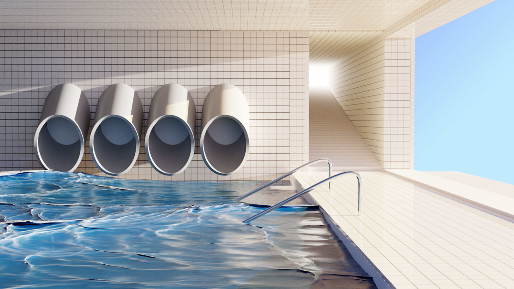

Level 37 (aka Poolrooms)
Level 37, commonly referred to as the Poolrooms, is an expansive complex of interconnected rooms and corridors slightly submerged in undulating, lukewarm water. Each area of the level varies greatly in size and structure, ranging from uniform pools and hallways to more open, abnormally-shaped areas. The walls, ceilings, and floors of the level all appear to be constructed from the same white ceramic tile, with the only deviation from this color being the blue-green hue of the water. Such tiles are eerily pristine in condition, all identical to one another, without a single hint of damage on their shiny surfaces.
My thoughts
The Poolrooms is so surrel, i remember playing a fan-made game of the Backrooms, and they perfectly nailed the Poolrooms and all of it's glory. that one game made me fall in love with the Poolrooms and how calming it feels when you're in this Level.